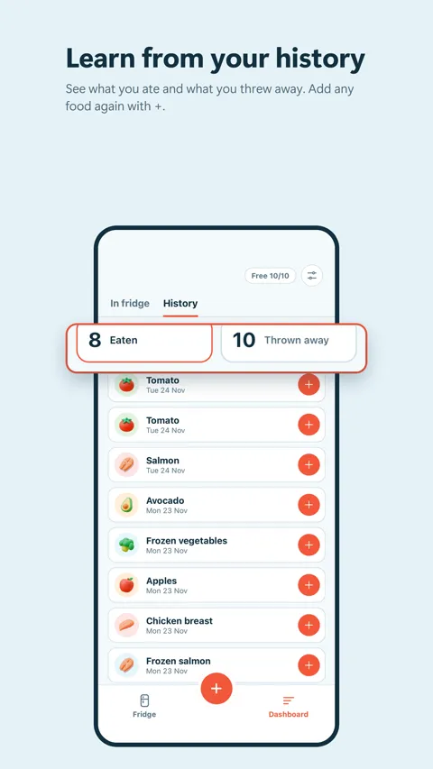

期限が近いものから食べよう
Chantha は iPhone 用のシンプルな冷蔵庫管理アプリです。冷蔵庫に入れた食品と期限日を登録すると、先に食べるべきものを表示し、期限が切れる前にお知らせします。
Chantha は iPhone 用のシンプルな冷蔵庫管理アプリです。冷蔵庫に入れた食品と期限日を登録すると、先に食べるべきものを表示し、期限が切れる前にお知らせします。



同時に10品まで無料。買い切りの購入で上限がなくなります。サブスクリプションはありません。